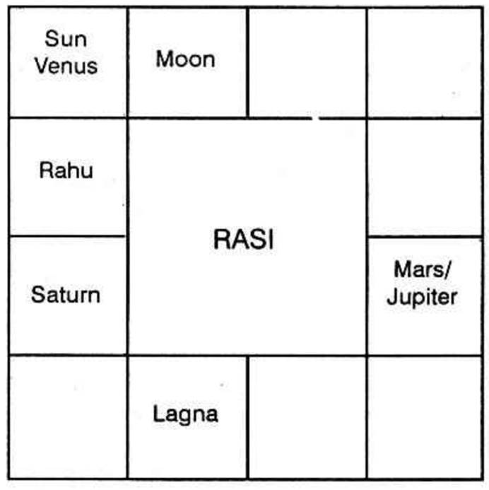
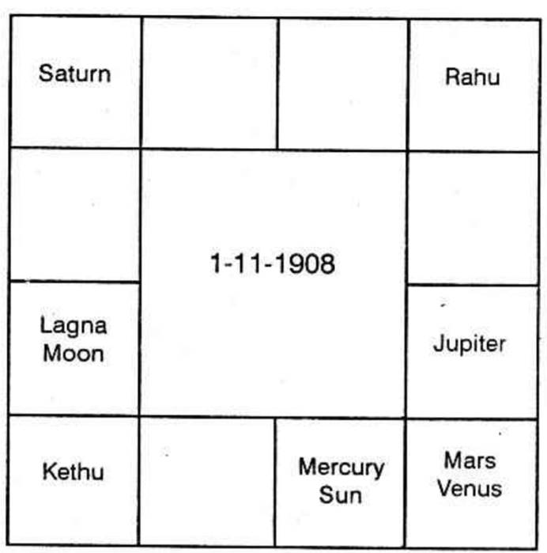

Significator of the 4th house indicates one’s regular attendance to a school or a college and study year after year.
Significator of the third house shows one’s inclination to specialise any subject or desire to read that subject as is indicated by the 3rd house.
Significator of the 9th house gives taste and chances to study further.
3rd and the 5th house show one’s native intelligence; but that of the 4th indicates studious habit and industry.
Sun conjunction with Mercury or in the Constellation or sub of Mercury causes Nipuna Yoga. But it does not mean that he is to qualify himself with some degree, so also people having no Nipuna Yoga can be double-degree holders. Further, a few are under wrong impression that Mercury when in rapt conjunction or when eclipsed cannot give education. Actually Chief Engineers, Auditor generals, greatest mathematicians, wranglers, intelligent Income Tax Officials are having Mercury in rapt conjunction or eclipsed or retrograde.
One is to consider the sublord of the ascendant to find out whether one will be studious or lazy: Mercury and Jupiter give the mind to study and offer facilities. Saturn as a Significator of 3, throws obstacles while one studies and during examination time, one arrives late to the hall and remembers many points only after handing over the answer paper and leaving the hall.
To find out in which subject one will be proficient, one has to judge the 2nd, 3rd, 4th, 9th and 10th houses.
Mercury, Being the Significator of angular houses, Venus as significator of 5 or 9 or 2 and lord of 2 strongly connected with Mercury or Venus. For further combination refer page 53 of Vol. 1.
Hindu:- (a) Saturn in 8; Jupiter in Ascendant; Mercury and lord of 2 conjoined in an angle;
(b) lord of 2 conjoined with Mercury; Venus in exaltation and Jupiter in a Kona or Kendhra;
(c) Sun and Mercury in 2 aspected by Saturn-Statistics;
(d) Sun in Virgo-Mathematics, Engineering, Draftsman, Drawing;
(e) Mercury ruling the navamsa sign occupied by lord of 10 – Correspondence and Mathematics;
(f) If Ketu and Jupiter are in 2 or 3 or 5, to the Navamsa sign occupied by the Atmarkaraka;
(g) Mars in 2 receiving beneficial aspect;
(h) Moon conjoined with Mars and aspected by Mercury;
(i) Jupiter in Lagna, Saturn in 8 and Mercury lord of 8.
K.P. -
Mercury must be strong to be good in mathematics, and be the Significator of 2 or 4 or 9.
Wemyss opines as follows: Airy signs give intellect and imagination. One will seriously contemplate, plan and scheme, well in advance, during the periods of the planets in Cancer or Capricorn. One is a great critic, if Gemini or Sagittarius is occupied by the significator at 11° to 12° Methodical approach, cogency and coherence if occupied at 15° of Aries or Libra.
K.P. -
Jupiter gives knowledge in Law: Mercury offers eloquency and fluency: Mars stands for analysis, assertion, logic quick wit, argumentative faculty, penetration and authoratative speech.
Sublord of the Cusps of 4 and 9 indicate Mars, Mercury sub gives audacity; Mars in Jupiter sub shows that without much of legal knowledge, by commonsense and threatening the opponent, one becomes a successful cross examiner eliciting the truth and getting favourable points. I know two criminal lawyers who do not possess much of legal knowledge, but by such action, they always appear in rape cases and even save their clients.
One is to be good in mathematics, drawing and planning. Mars and Mercury produce Engineering students having taste in Mechanical, or Civil Engineering including construction of building, erection of machinery, factory Structural and Architectural Engineering.
Venus and Mercury show Sanitary Engineering or chemical Engineering or Electrical Engineering or Automobile Engineering. Sun and Mercury indicate Chemical Engineering; Drugs; Pharmaceuticals manufacturing industry; Moon and Mercury-Textile Engineering; Moon, Mars and Mercury-Marine Engineering; Moon, Sun and Mercury-Mechanical Engineering; Moon, Saturn and Mercury-Mine Engineering; Mars, Jupiter and Mercury Press, Mechanical Engineering, Machines, Tools, spare parts; Uranus and Mercury-research, atomic energy; Neptune and Mercury-Marine Engineering or Chemical Engineering; manufacturing poison; Moon, Saturn and Mars-excavation, mine or trenches, construction of dam or bridge etc.
Thus depending on the connection which Mercury has, one is to ascertain, in which branch, he will specialise, Mercury, or the planets occupying the two signs of Mercury or the 3 stars (Ashlesha, Jyeshta, Revati) produce Engineering Students.
Sun is called “Dhanvanthri, “Sign ‘Virgo’ is said as the hospital of the Zodiac.
Scorpio indicates medicine, chemicals and mortuary. Pisces shows isolation hospital, Sanatorium, Asylum etc. Leo indicates medicine.
Airy signs and Scorpio occupied by significators give fertile imagination, proper intuition and prompt action. Sun or Mercury in Scorpio receiving harmonious aspect from Uranus gives mind to do research. (Western)
Sun and Jupiter – Physician.
Sun and Mercury – Consulting Physician.
Sun and Mars – Surgeon.
Sun, Venus and Jupiter – Maternity.
Sun, Venus, Mars, Saturn – Venereal
Sun and Saturn – Bone, Osseous system
Sun, Saturn, Venus – Eye disease
Sun and Venus – Optician, Sun, Venus, Moon: Optician
Sun and Saturn – Dentist
Sun, Venus and Mercury – Ear, nose, throat
Sun, Venus, Rahu or Uranus – ‘x’ ray
Sun and Uranus – Research
Sun, Moon, Mercury – Digestive system
Sun, Moon, Jupiter – Hernia, Appendicitis
Moon, Sun, Venus – Diabetes expert
Sun, Significator of 4, Saturn – Asthma – T.B.
Sun, significator of 5, Saturn – Blood pressure. Cardiac specialist etc.
Mars, Jupiter and Sun – Ayurvedic
Jupiter, Sun and Saturn – Homeopathy
Sun and Jupiter – Nature cure
K.P. –
(a) Sun and Mercury as significator of 5, connected with Saturn.
(b) Jupiter and Saturn as Significator of 4th or 9th house.
Hindu.
(c) Mercury exalted in 2, Saturn in Gopuramsa; Jupiter in Simhasanamsa, or
(d) Saturn in paravatamsa, Jupiter receiving aspect from Mercury.
(e) Or Jupiter in trine or angle
(f) Venus in Lagna in Utamamsa
(g) Or Venus in an angle in Utamamsa and Moon in Devalocamsa
(h) Lord of 1 in 2 and lord of 2 in Paravatamsa etc.
5th house shows music: 2nd house is for vocal and the 3rd for instrumental. 3 and 12 indicate such instruments where both the legs and hands are to operate. Neptune indicates stringed instruments. Venus gives the taste for music. Moon and Venus for imagination and Alapana. Venus adds melody, Mercury denotes rhythm, thalam, gives courage and confidence and one will be free from stage-fear. Mars, Saturn and Venus gives taste in Tabla, Mridangam etc. where the dead skin is used. Airy sign and short ascension denote flute. Airy sign and long ascension indicate Nathaswaram. Earthy sign connected with Mercury-(dual planet-plurality) shows Mridangam. Unconnected with Mercury denotes Tabla. Neptune and Venus connected with airy or earthy sign or planets in airy sign and in long ascension show Veena. Short ascension indicates violin. Watery sign denotes Jalatarangam. Voice signs or signs ruled by Venus being the 2nd house or Venus in 2 makes one a vocal musician – Sun in Sagittarius gives taste for music.
Jupiter and Mercury give taste for journalism. Moon also contributes. One can narrate in detail if they occupy or if they receive aspect from the planets in Virgo or Pisces. If the third and the 9th houses are signified by these three planets, one will take journalism.
Mercury and Moon are favourable for mathematics, accounts, inspection of accounts etc. Airy signs and Virgo are the favourable signs to learn accounts.
Saturn and planets occupying either Capricorn, the earthy sign belonging to Saturn, or in the sub of Saturn gives taste to Geology.
Sun, planets in Sun’s star and Sun’s sub show that one will be interested in Geography.
Venus, planets in the star and sub of Venus and Sun give taste of Chemistry.
Mercury and Venus show physics. Planets in their constellation or sub also make one proficient in Physics.
Moon, Mercury and Jupiter indicate History.
Education is Successful if the lord of 4 and lord of 9 are in the Sub of significator of 11. Planets in any manner connected with lords of 4 and 11 give education. Even if one discontinues one’s study, yet if planets receiving good aspect from the lords of 4 and 9 or lords of 4 and 9 receiving good aspect from planets in the constellation of the occupant in 11, or the occupant in 11 or lord of 11 give further education, after a break.
Education ends during the periods and subperiods of the planets in the constellation of the occupant of the houses 3 or 5 or 8 or the occupants of the houses 3 or 5 or 8 or the planets in the constellation of the lords of 3 or 5 or 8 or the lords of the houses 3 or 5 or 8. Malefic Saturn is detrimental. Rahu does not prove to be bad. It gives education when it is in the constellation of the planets connected with the houses 4 and 9.
Mars, Mercury and Jupiter promise success if they are connected with 4, 9 and 11.
The fourth house indicates whether one will study at all. The ascendant or the Lagna denotes the person. The 8th house represents the school where he may study. The 7th house shows the teacher. The houses 8 and 12 connected with the 4th house and vice versa indicate that one will pay the fees, etc. and study. But the 4th having connection with the 6th and the 11th houses indicate scholarship.
The 7th house will indicate the person to whom or the institutions to which you have to pay or the person from whom or the institution from which you have to receive.
Scholarship is a non-repayable loan. Generally the 6th house is judged for a loan. Why? As the seventh house represents one who lends money to you, the vyaya house, the 12th to the 7th shows that he has to lose or he has to withdraw that amount which he gives as loan and there will be a deterioration in his bank position to that extent to which he issues the cheque. But it is an income to the native. His bank position or the money on hand increases by that amount which he takes as a loan.
Similarly, the institution is entitled to take money from the students. But if one is given a scholarship, it means the institution loses through that student and pays the fees for him. Rather, the institution gives that amount to the student as a loan which need not be returned at all.
Hence the 4th house should be connected with the 6th house, i.e., the planet in 4 may be in the constellation of the occupant in the 6th house or the lord of the sixth house.
11th house indicates benefit, profit, gains, etc. Since, scholarship is a non-refundable one, it is a profit and the house of education will have connection with the 11th house.
8th house occupied by benefics indicates that the native will pay and study as the benefic is in the second house to the seventh.
12th house shows expenses. So the native is to spend and study. If the 4th house, Jupiter and Mercury are connected with 12th house he pays the fees and studies. But if the 12th house, is connected with Venus or the lord of 3, he pays, for his conveyance, though he may enjoy scholarship. If the 12th house is connected with Mars and 3rd house, he may shift to a hostel, pay for boarding and lodging but will receive scholarship.
Let us take the horoscope of a native who is given scholarship and who is now studying in America.
The person was born on a Tuesday ruled by Mars, in Scorpio ascendant, ruled by Mars, in Aries Rasi (where Moon was at the time of birth) owned by Mars on 28th March 1933 at 10-23 p.m.

At the time of birth, Balance of Venus Dasa was 19 years and 3 days.
Till he completed M.B.B.S. and then M.D. he had been paying and studying at school and college. But during Moon dasa Saturn Bhukti he got the scholarship and went overseas for study.
Why should he get a benefit then and go overseas?
Moon, the lord of 9, indicating long journey and higher studies was in the constellation of Venus owning the 12th house. So a long journey and life in a foreign place for further study are indicated by Moon.
Saturn owns the 4th house. It has to give a regular course of study. It is in the 3rd house: so a thorough change in surroundings and environment is indicated. It aspects the 9th house and the 12th house. Hence it influences these houses and matters signified by these houses are enjoyed. I.e., a long journey and life in a foreign place.
The above reasons explain his further study in foreign place. Why should he get a scholarship?
Saturn which is the ruler of the 4th house indicates his study. It is in the constellation of Moon which was in the sixth cusp in his horoscope. When the 7th house indicates school and the 6th shows expense to them or scholarship to the student. Moon gives scholarship to him, at a time when the planet in the constellation of Moon operates. Actually he received the order during Moon Dasa, Saturn Bhukti on a Pushyam star day ruled by Saturn in the Cancer (the Moon’s sign and left India on a Sravanam star day (governed by Moon in Saturn’s sign Capricorn) at the time Moon just passed the position of Saturn.
Similarly, the research students of astrology may collect the horoscope of the students who are given scholarship and find out in which Dasa and Bhukti he was first offered the scholarship and judge how the Dasanatha and Bhuktinatha are connected with the houses 4 and 6 or 4, 6, and 11.
The following is the horoscope of the Editor of this book who received Scholarship while he was studying in the St. Joseph’s College, Trichy:

The balance of Moon dasa is 8 years and 2 months. The scholarship was awarded during Rahu Dasa, Rahu Bhukti, Mars Anthra in August, 1926, and Rahu was in the star of Mars, lord of 4 and 11 and it represents Mercury, the lord of 6 and 9 by occupying Gemini.